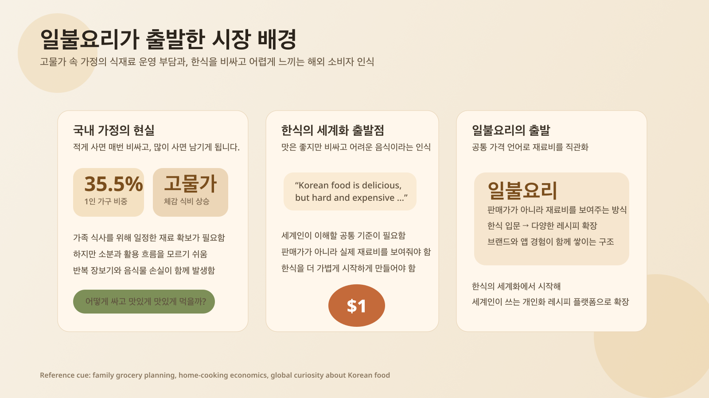
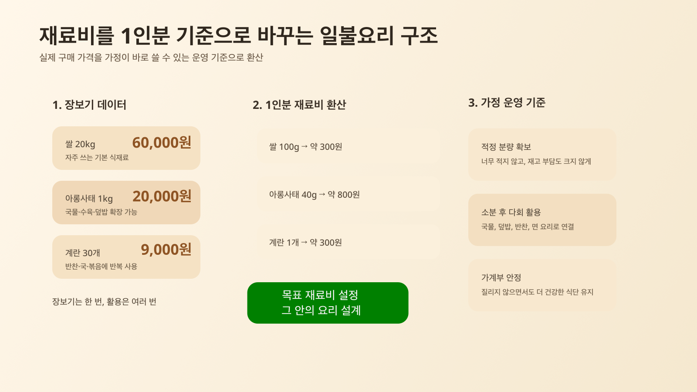
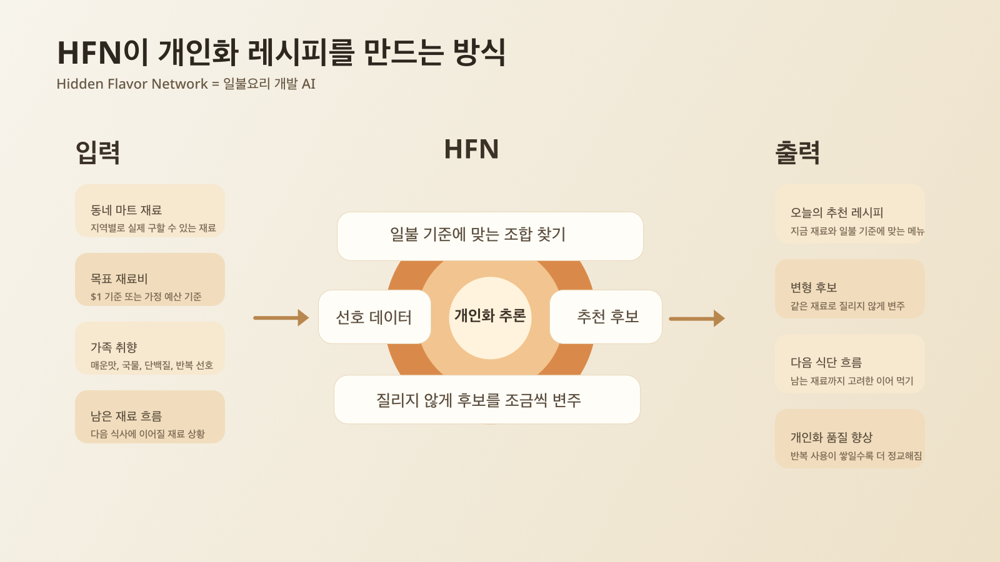
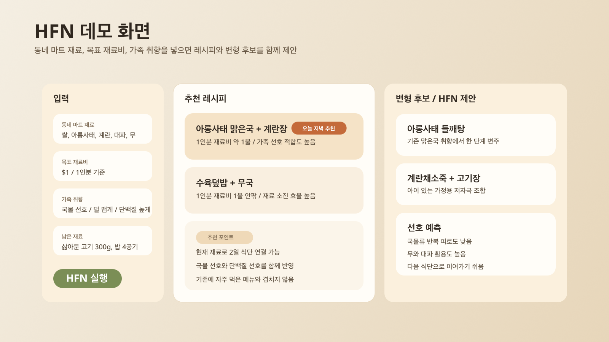
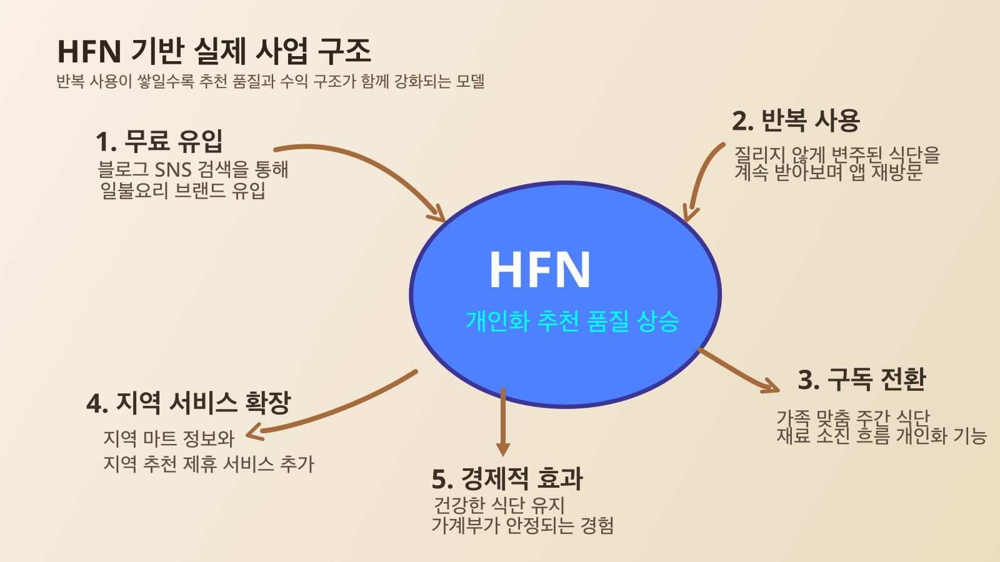

Q1. 이 아이디어를 떠올린 배경은 무엇인가요?
일불요리는 고물가 속에서 가족 식사를 운영해야 하는 가정의 현실과, 한식에 대한 글로벌 관심 확대라는 흐름에서 출발한 아이디어입니다. 저는 오랜 기간 직접 장을 보고 요리하면서 식비를 낮추는 핵심이 무조건 적게 사는 것이 아니라, 쌀·육류·계란·채소처럼 자주 쓰는 재료를 한 번에 적절히 확보한 뒤 나눠 쓰고 여러 메뉴로 확장하는 데 있다는 점을 체감해 왔습니다. 그렇게 하면 식사 한 번의 재료비는 오히려 안정적으로 낮아지고, 맛과 만족도도 유지할 수 있습니다. 이 경험 위에 외국인 지인들로부터 한국 음식은 맛있지만 비싸고 집에서 해 먹기 어렵다는 이야기를 반복적으로 들으며, 한식을 더 쉽게 이해시키는 기준이 필요하다고 느꼈습니다. 그래서 전 세계인이 직관적으로 이해할 수 있는 공통 기준인 dollar를 기준으로 재료비를 보여주는 일불요리를 구상하게 되었습니다. 여기서 1불은 판매가가 아니라 실제 재료비 기준을 뜻합니다. 나아가 일불요리라는 상호 자체를 핵심 브랜드로 키워, 한식을 쉽고 합리적으로 경험하게 하는 대표 이름으로 만들고, 이후에는 이 구조를 다양한 문화권의 레시피로 자연스럽게 확장하고자 합니다.
Q2. 누구의 어떤 문제를 해결하고자 하나요?
일불요리의 1차 타깃은 3~4인 가정처럼 식사 수요는 꾸준하지만 식재료 운영은 늘 부담스러운 가정입니다. 이런 가정은 어느 정도 재료를 사야 단가가 좋아지는지 알면서도, 막상 사 놓으면 무엇을 먼저 쓰고 어떤 메뉴로 이어갈지 몰라 식비를 아끼지 못하는 경우가 많습니다. 적게 사면 매번 비싸고, 많이 사면 남기게 되는 것이 문제입니다. 또한 동네마다 자주 가는 마트가 다르고, 계절마다 재료가 다르며, 가족마다 좋아하는 맛도 다릅니다. 그런데 기존 레시피 서비스는 대개 누구에게나 같은 레시피를 보여주거나, 남은 재료를 넣으면 이미 있는 레시피를 연결해 주는 수준에 머뭅니다. 일불요리는 이와 다르게 사용자가 구할 수 있는 재료, 목표 재료비, 가족 취향을 바탕으로 맞춤형 한식 레시피를 추천하는 서비스입니다. 즉 정해진 레시피를 일방적으로 보여주는 것이 아니라, 각자의 재료 상황과 선호에 맞는 나만의 일불요리를 제안하는 것이 핵심입니다. 이 점이 한식의 진입장벽을 낮추고, 이후 다른 문화권의 레시피로 확장될 때도 일불요리 브랜드만의 차별점이 됩니다.
Q3. 이 아이디어를 어떻게 실현하고 싶으신가요?
현재는 관련 인력을 이미 섭외해 대표를 중심으로 초기 실행 체계를 준비하고 있으며, HFN(Hidden Flavor Network, 일불요리 개발 AI)을 활용한 앱 출시를 중심으로 사업을 실현하고자 합니다. 사용자가 동네 마트 재료, 목표 재료비, 가족 취향을 입력하면 앱이 그 조건에 맞는 레시피를 추천하는 것이 기본 구조입니다. 초기에는 한식 카테고리를 먼저 정교하게 만들고, 가격 환산 기준표와 데모 화면을 바탕으로 MVP를 완성한 뒤 같은 구조를 다른 요리로 확장할 계획입니다. HFN의 차별점은 같은 레시피를 반복해서 보여주는 것이 아니라, 사용자가 좋아한 조합과 재료 흐름을 바탕으로 조금씩 다른 후보를 제안해 질리지 않게 만든다는 점입니다. 즉 남은 재료를 넣으면 기존 레시피를 단순 연결하는 수준이 아니라, 지금 재료 상황과 선호에 맞춰 기존 조합을 변형한 후보를 제안하는 방향입니다. 수익 구조는 무료와 유료를 분리해 설계할 계획입니다. 기본 레시피 추천과 콘텐츠 유입은 무료로 제공하고, 가족 맞춤 주간 식단, 재료 소진 흐름 추천, 개인화 기능은 구독형 서비스로 확장하고자 합니다. 사용자는 매번 같은 메뉴를 다시 검색하는 대신, 질리지 않게 변주된 식단을 계속 받아보며 건강하게 먹고 가계부가 안정되는 효과를 체감하게 됩니다. 이 경험이 반복 사용과 구독으로 이어지고, 이후에는 지역 마트 정보나 지역 기반 추천 서비스로도 확장될 수 있습니다. 초기에는 앱과 블로그·SNS를 함께 운영해 일불요리 상호를 중심으로 브랜드를 축적하고, 반복 사용이 쌓일수록 HFN 추천 품질이 높아져 구독 전환으로 이어지게 할 계획입니다.
Q4. 제출 이미지 구성은 어떻게 되나요?
이미지는 고물가 속 식재료 운영 부담, 실제 구매 가격을 한 끼 재료비로 환산하는 기준, HFN이 가족 선호와 지역 재료를 반영해 레시피를 설계하는 구조, 앱 데모 화면, 블로그·SNS 유입에서 구독 확장으로 이어지는 플라이휠 순서로 구성합니다. 기존 최종 제출 문서의 이미지 흐름을 그대로 홈페이지에 옮겨 심사자가 문항과 시각 자료를 한 번에 확인할 수 있게 합니다.




